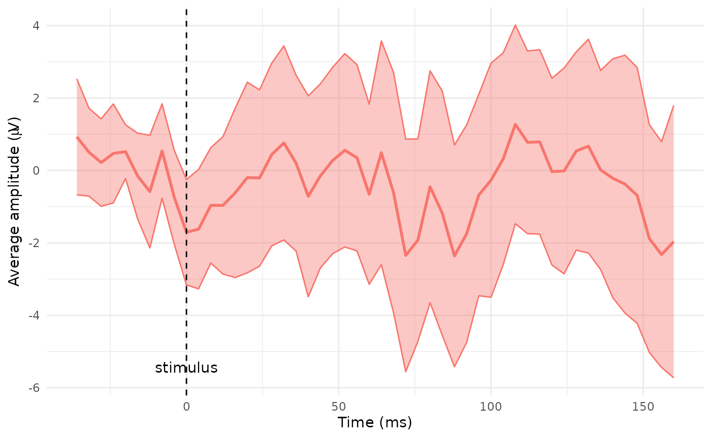
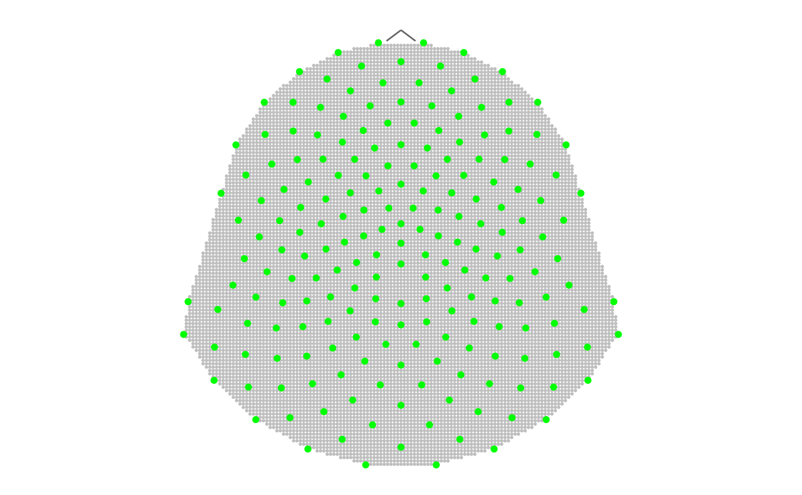
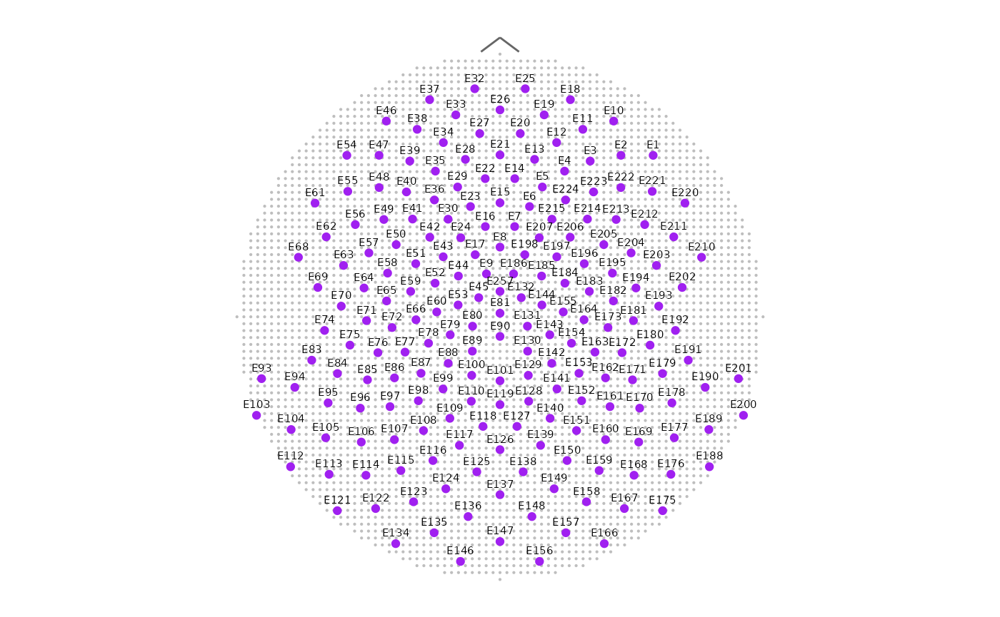
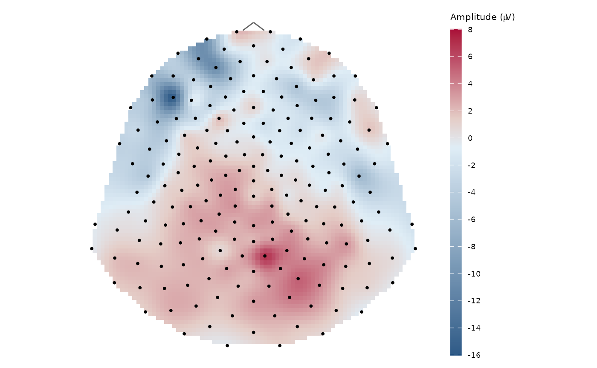

diegr
diegr.Rmd#> Warning in rgl.init(initValue, onlyNULL): RGL: unable to open X11 display
#> Warning: 'rgl.init' failed, will use the null device.
#> See '?rgl.useNULL' for ways to avoid this warning.The package diegr displays high-density
electroencephalography (HD-EEG) data in different ways using interactive
elements or animations for a comprehensive overview of data.
Installation
install.packages("diegr")
# or for development version:
# install.packages("devtools")
devtools::install_github("gerslovaz/diegr") Data
The package contains built-in datasets. Due to the nature of the experiment and the size of the data, this is only a small section which serves as a demonstration of the implemented functions and it is not possible to reconstruct the real signal of a specific sensor or subject from it. Details of the experiment from which the original data comes can be found in Madetko-Alster and col., 2025.
epochdata
The brain signal originally measured by 256-channel HydroCel Geodesic Sensor Net with sampling frequency 250 Hz. Example dataset contains amplitude values from 204 selected channels at 50 time points (stimulus at time point 10) for 2 representative subjects (one healthy control, one patient). Out of 50 epochs per subject, 14 (or 15, respectively) were selected.
The data is organized into a data frame with the following columns:
-
time: Number of time point. Number 10 indicates the time of stimulus (0 ms), the interval between two time points corresponds to 4 ms (sampling frequency 250 Hz). -
signal: HD-EEG signal amplitude (in microvolts). -
epoch: Epoch number (there are 14 epochs for subject one, 15 epochs for subject two). -
sensor: Sensor label (labeling corresponds to the Geodesic Sensor Net Technical Manual, 2024). -
subject: Subject ID (1 - representative healthy control subject, 2 - representative patient subject).
HCGSN256
The Cartesian coordinates of HD-EEG sensor positions in 3D space on the scalp surface and their projection into 2D space according to 256-channel HydroCel Geodesic Sensor Net average template montage.
The data is organized into a list with the following elements:
-
D2: A tibble with coordinates and labels of sensors in 2D. -
D3: A tibble with coordinates and labels of sensors in 3D. -
ROI:A vector with the region of interest (ROI) assignment for each sensor (“central”, “frontal”, “occipital”, “parietal” or “temporal” according to the brain regions and “face” for the face area). Sensors are labeled according to Geodesic Sensor Net Technical Manual, 2024.
Axis orientation (3D): - x: left (-) to right (+); - y: posterior (-) to anterior (+); - z: inferior (-) to superior (+).
rtdata
The response time values in individual experiment epochs for 2
representative subjects (one from patient, one from healthy control
group). The epochs and subjects correspond to the sample dataset
epochdata.
The data is organized into a data frame with the following columns:
-
subject: Subject ID (1 - representative healthy control subject, 2 - representative patient subject). -
epoch: Epoch number (there are 14 epochs for subject one, 15 epochs for subject two). -
RT: Response time in ms.
Tools useful in preprocessing
The package assumes that the input data have already been preprocessed (artifact removal, independent component analysis - ICA, segmentation, …), but may still contain outliers that should be excluded for specific statistical analyses.
The useful tool in outliers detection is interactive plot with
boxplots of amplitudes (boxplot_epoch()) or response times
(boxplot_rt()) in individual epochs. The
plotly output makes it easy to determine the epoch number
from which outliers come and additionally allows editing of the output
image layout.
There is also an interactive graph of amplitudes in individual epochs
with (or without) the average plotted
(interactive_waveforms()). This function can also be used
to compare signals across different experimental levels (e.g., sensor,
subject, group, or condition) as specified by the level
argument.
# The function for interactive boxplot of signal assumes
# pre-filtered data input
# example: subject 1 and channel E34 in time points from 10 to 20
subdata <- epochdata |>
pick_data(subject_rg = 1, sensor_rg = "E34")
boxplot_epoch(subdata, amplitude = "signal", time_lim = 10:20)
# customizing the output title and axis labels using |> operator
p1 <- boxplot_epoch(subdata, amplitude = "signal", time_lim = 10:20)
p1 |> plotly::layout(xaxis = list(title = ""),
yaxis = list(title = "Amplitude"),
title = list(text = "Outlier detection for subject 1 and channel E34",
font = list(size = 11, color = "darkblue"))
)
# note: the output is not plotted to reduce the vignette file sizeOutlier epochs can be easily detected using the hover text in the
plotly output. In the case above, the outlier is epoch
14.
The results can be supported computationally by the
outliers_epoch() function, which allows the evaluation of
outliers using one of three criteria (interquartile range - IQR,
percentile approach or Hampel filter).
The output of this function is a table containing epoch IDs and the
number of time points in which the epochs were evaluated as outliers
(according to chosen criteria) for unique combinations of input
variables (e.g. group, subject, sensor).
# Example: outlier detection for both subjects and channel E34 using IQR method
# The column in which we are looking for outliers is specified by the `amplitude` argument
epochdata |>
pick_data(sensor_rg = "E34") |>
outliers_epoch(amplitude = "signal", method = "iqr")The results correspond with findings from
boxplot_epoch() - for subject 1, epoch 14 was evaluated as
an outlier in all 50 time points.
Analogously to function boxplot_epoch(), function
boxplot_subject() works to identify outliers at the subject
level.
Preparing signal for visualisation
The main focus of the package is interactive visualization and animation of the HD-EEG data. This often requires first baseline correcting the data or averaging the signal across epochs, sensors/time points, or subjects.
The baseline correction of the amplitude is enabled through the
function baseline_correction(). In the first release of the
package, only most commonly used absolute correction
(type = "absolute"), which subtracts mean over
base_int, is available.
The calculation of the average signal can be performed using the
function compute_mean(), which computes pointwise
standard/weighted or jackknife (leave one out) mean of the signal at
different levels. In addition to the mean itself, the function also
calculates the boundaries of the point confidence interval
(ci_low and ci_up in the output). The argument
domain determines whether the average is calculated within
individual time points (for curves) - domain = "time" or
sensors (for topographic maps) - domain = "space".
# preparing data for later visualisation
# filtering signal without outlier epochs 14 and 15
# and computing epoch level jackknife average from baseline corrected data
# Note: data filtering is possible both using the pick_data() function or dplyr commands
edata <- epochdata |>
pick_data(subject_rg = 2, epoch_rg = 1:13) |>
baseline_correction(baseline_range = 1:10)
s1 <- edata |>
dplyr::filter(time == 10) |>
compute_mean(amplitude = "signal_base", level = "epoch",
domain = "space", type = "jack")Temporal domain visualization
The interactive_waveforms() and
plot_time_mean() can be used to display the time course of
the signal. While function interactive_waveforms()
interactively displays individual waveforms at different levels via
plotly, function plot_time_mean() is adapted
directly to display the average signal including the pointwise
confidence interval as a ggplot object.
# computing jackknife average from channel E65
s2 <- edata |>
pick_data(sensor_rg = "E65") |>
compute_mean(amplitude = "signal_base", level = "epoch",
domain = "time", type = "jack")
# plotting the average, the zero time point (stimulus) is set to 10
plot_time_mean(s2, t0 = 10)
Spatial visualization
Mesh Generation
The original electrode grid is too coarse for graphical rendering. To
achieve smoother and more visually appealing results in plots, it’s
necessary to generate a denser mesh of points. This refined mesh
provides better spatial resolution and enhances the quality of
visualizations. Creating a new mesh is available through
point_mesh() function. This function computes the
coordinates of mesh in 2D and/or 3D and enables to control a density
(argument n) or the shape (argument type) of
the result mesh.
The default setting creates a polygonal mesh with starting number 10000
points and computes the coordinates in both dimensions, which are
available in $D2 and $D3 parts of a result
list (class "mesh").
For simple created mesh plotting use the function
plot_point_mesh(), which results in two dimensional
ggplot of point mesh or three dimensional rgl
plot depending on the input dimension.
Notes:
- Creating and plotting a mesh for subset from the whole template
montage is available through
sensor_selectparameter. For consistency between created mesh and its plot use the same vector of sensor labels in both functions. - The input of
plot_point_mesh()must be only the relevant part with coordinates -$D2for two dimensional and$D3for three dimensional plot. - If the number of mesh points is large, they are no longer visible in the plot and the mesh looks like a solid surface (as can be seen below in first plot).
- Depending on the hardware used, the computational cost of default
n = 10000can be high. In this case we recommend to reducenand to reuse a precomputed mesh across plots for speed.
# creating a mesh with default settings
sensors204 <- unique(epochdata$sensor)
M1 <- point_mesh(template = "HCGSN256", sensor_select = sensors204)
# plot output in 2D
plot_point_mesh(M1$D2, sensor_select = sensors204)
# creating a circular mesh, only 2D coordinates
M2 <- point_mesh(dimension = 2, n = 3000, template = "HCGSN256",
sensor_select = sensors204, type = "circle")
# plotting a mesh - function allows different options of the result plot
plot_point_mesh(M2$D2, sensor_select = sensors204, col_sensors = "purple",
label_sensors = TRUE, cex = 0.1)
diegr’s plotting functions also allow users to input the
custom mesh created in other way, it is only necessary to maintain the
structure following a "mesh" object.
If the mesh input is not specified, the graphic functions
automatically use the mesh created by point_mesh() with
default settings.
Topographical maps in 2D projection
The topo_plot() function is used to plot a topographic
map of the brain signal, the amplitude values are colored by default
using a topographic colour scale. An alternative to this function
adapted directly to plot the mean along with the confidence interval
bounds is plot_topo_mean(). In the default topographic
colour scale, amplitude = 0 is mapped to the blue–green boundary;
positive values trend towards yellow/red, negative towards dark blue.
The coulour_scale() function also offers the
"redblue" palette, with negative values corresponding to
shades of blue and positive values corresponding to shades of red.
Additionally, the users can choose their own palettes using
col_scale argument.
Both topo_ functions allow setting some optionally
arguments for editing the output appearance (with or without contours,
sensor names, etc.) and return ggplot object for further
customization.
Notes:
The input values of amplitude (or also CI bounds in the case of the
plot_topo_mean()function) outside the chosencol_rangewill cause “holes” in the resulting plot.To compare results for different subjects or conditions, setting the same values of
col_rangeandcol_scalearguments in all cases is necessary.
# Plot average topographic map of baseline corrected signal for subject 1
# from the time point 10 (the time of the stimulus)
# the outlier epoch 14 is extracted before computing average
# preparing data
data_base <- epochdata |>
pick_data(subject_rg = 1, time_rg = 1:10) |>
baseline_correction(baseline_range = 1:10)
data_mean <- data_base |>
pick_data(epoch_rg = 1:13, time_rg = 10) |>
compute_mean(amplitude = "signal_base", type = "point",
domain = "space")
# plotting the base topographic polygon map with contours and legend
# interval (-30,15) is selected in consideration of the signal progress
topo_plot(data = data_mean, amplitude = "average",
col_range = c(-30, 15), contour = TRUE)
# plotting the same map without contours and legend
# but with sensor labels and adding the title
g1 <- topo_plot(data = data_mean, amplitude = "average",
col_range = c(-30, 15),
label_sensors = TRUE, show_legend = FALSE)
g1 + ggplot2::ggtitle("Subject 1, time of the stimulus")
# plotting the average together with CI bounds using plot_topo_mean
plot_topo_mean(data = data_mean, template = "HCGSN256", col_range = c(-30, 15))![Fig 1: A top-down topographic map of a high-density EEG amplitude in topographic colour scale with contours and black points on sensor locations. The amplitude legend is on the left side of the scalp projection. Fig 2: The same plot without contours and legend, but with sensor labels as text displayed together with black point on sensor positions. Fig 3: A ggplot divided into three panels with topographic maps of average signal (middle) and its lower (left) and upper (right) confidence interval bounds. The colour legend position is bottom of the facets.](diegr_files/figure-html/unnamed-chunk-8-1.png)
![Fig 1: A top-down topographic map of a high-density EEG amplitude in topographic colour scale with contours and black points on sensor locations. The amplitude legend is on the left side of the scalp projection. Fig 2: The same plot without contours and legend, but with sensor labels as text displayed together with black point on sensor positions. Fig 3: A ggplot divided into three panels with topographic maps of average signal (middle) and its lower (left) and upper (right) confidence interval bounds. The colour legend position is bottom of the facets.](diegr_files/figure-html/unnamed-chunk-8-2.png)
![Fig 1: A top-down topographic map of a high-density EEG amplitude in topographic colour scale with contours and black points on sensor locations. The amplitude legend is on the left side of the scalp projection. Fig 2: The same plot without contours and legend, but with sensor labels as text displayed together with black point on sensor positions. Fig 3: A ggplot divided into three panels with topographic maps of average signal (middle) and its lower (left) and upper (right) confidence interval bounds. The colour legend position is bottom of the facets.](diegr_files/figure-html/unnamed-chunk-8-3.png)
Topographical maps on the scalp
The scalp_plot() function is created for plotting a
scalp polygon map of the EEG signal amplitude using by default the same
topographic colour scale as in topo_plot()). The result
plot is rendered using rgl::shape3d function and the signal
interpolation between sensor locations is based on thin-plate spline
interpolation model.
Correct mesh triangulation is required for appropriate colour rendering.
This triangulation is constructed by make_triangulation(),
which creates a Delaunay type-I triangulation (Lai & Schumaker,
2007) with consistently oriented edges (Schneider & Eberly,
2003).
Note: - The input values of amplitude outside the chosen
col_range will cause “holes” in the resulting plot. - To
obtain comparable results between different subjects or conditions,
setting the same values of col_range and
col_scale arguments in all cases is necessary.
# plotting the scalp polygon map of previously prepared signal s1
#open3d()
scalp_plot(s1, amplitude = "average", col_range = c(-30, 15))
# note: the output is not plotted to reduce the vignette file sizeThe rgl output enables to zoom and rotate the image with
default view of the back of the head.
Animations
The package includes the animate_topo() and
animate_topo_mean() function for 2D topographic animation
in time and animate_scalp() function for 3D scalp animation
in time. Both of these functions allow to export the output, a gif
animation using gifski package for 2D case and a .mp4 video
format using av package for 3D case. The topographic map
animation uses gganimate and and accepts additional
parameters passed to gganimate::animate() via
.... The most of input parameters of
animate_topo() are the same as in topo_plot()
function, parameters related to animation properties and export are
added and also the t_lim parameter for setting the length
of the timeline displayed below the animation. The
animate_topo_mean() function is customized for topographic
maps of average signal together with pointwise confidence interval
bounds displayed as topographic maps on the sides of the average map.
Usage is almost identical to the animate_topo() function,
only input data must contain columns average,
ci_up and ci_low (like the output from the
compute_mean function). Example: The animation of time
course of the EEG signal for subject 1 and epoch 5 (from
epochdata) between time points 10 and 20 with the whole
range of time 0:50 is created as follows (the output is not rendered to
reduce the vignette file size):
# filtering the example data
s1e05 <- epochdata |>
pick_data(subject_rg = 1, epoch_rg = 5, time_rg = 10:20)
# Plot animation with setting the range of time and t0 = 10 indicating the time of the stimulus:
animate_topo(s1e05, amplitude = "signal", t_lim = c(0,50), t0 = 10)
# Export the gif animation - this code will create the animation inside your working directory.
# If you want to export it elsewhere, set the whole path in output_path parameter.
animate_topo(s1e05, amplitude = "signal", t_lim = c(0,50),
t0 = 10, output_path = "example_animation.gif")The scalp animation enables to export a video in .mp4
format using the av package or save a sequence of frames
into chosen directory setting the frames_dir parameter. The
animation speed can be controlled by the sec parameter in
the viewer or by the framerate parameter for the exported
video. The video resolution quality can be affected using
par3d function, for example
rgl::par3d(windowRect = c(100, 100, 800, 800)). Example of
scalp animation with the same data as above (the output is not rendered
to reduce the vignette file size):
# Plot animation with default mesh and triangulation:
animate_scalp(s1e05, amplitude = "signal")
# export the video - the .mp4 extension is required for correct functioning
rgl::par3d(windowRect = c(100, 100, 800, 800))
animate_scalp(s1e05, amplitude = "signal",
frames_dir = "your_frames_dir_path",
output_path = "your_created_video_path.mp4")If you are interested in animation of rotating scalp visualization in
fixed time point, you can easily achieve this by using the combination
of rgl::play3d and rgl::spin3d functions
according to the following code.
#open3d()
scalp_plot(s1, amplitude = "average", col_range = c(-30,15))
rgl::play3d(rgl::spin3d(axis = c(0, 0, 1), rpm = 10), duration = 10)
# note: the output is not plotted to reduce the vignette file sizeStep-by-step example: Comparing Topographic Maps of Two Subjects
In this section we present a sample code for analyzing topographic maps across subjects:
- Outliers detection
# using IQR method for selected sensor from central region
dataE59 <- epochdata |>
pick_data(sensor_rg = "E59")
outliers_epoch(dataE59, method = "iqr")
# verify results by visual inspection (for each subject separately)
dataE59 |>
dplyr::filter(subject == 1) |>
interactive_waveforms(amplitude = "signal", level = "epoch",
t0 = 10)
dataE59 |>
dplyr::filter(subject == 2) |>
interactive_waveforms(amplitude = "signal", level = "epoch",
t0 = 10)Subject 1: epoch 14 is an obvious outlier. Subject 2: epoch 15 is an obvious outlier, epoch 14 was denoted as outlier for 37 time points - we exclude both of them from further analysis.
- Baseline correction
We exclude outlier epochs before baseline correction, otherwise they would affect the baseline average computing.
Note: If there are multiple subjects (or other variables) in the
input data, the baseline_correction() add them into
grouping structure, so the baseline calculation is provided separately
for unique combinations of these variables. This procedure allows to
compute baseline correction for both subjects in one step.
subjects_base <- epochdata |>
pick_data(epoch_rg = 1:13) |>
baseline_correction(baseline_range = 1:10)- Average computing
We compute average topographic map in time point 35 (100 ms after stimulus) for both subjects. We use standard (un-weighted) pointwise average with bootstrap confidence intervals.
subjects_mean <- subjects_base |>
dplyr::filter(time == 35) |>
compute_mean(amplitude = "signal_base", domain = "space",
level = "epoch", R = 1000)- Average plotting
To maintain consistency between both subjects, we first construct a mesh and set colour range that we will use in both figures:
# prepare a mesh for plotting
M <- point_mesh(dimension = 2, n = 4000, template = "HCGSN256",
sensor_select = unique(subjects_mean$sensor),
type = "polygon")
# compute consistent col_range across subjects
# a) find the range of average amplitude
range(subjects_mean$average)
#> [1] -15.634288 8.609518
# -15.634288 8.609518
# b) make the range symmetric
cr_subjects <- c(-16,16)For plotting, we will use the plot_topo_mean() function,
which is directly adapted for rendering topographic map of the average
EEG amplitude together with its lower and upper confidence interval (CI)
bounds.
# plot the average topographic maps with the same color range for both subjects
subjects_mean |>
dplyr::filter(subject == 1) |>
plot_topo_mean(mesh = M, template = "HCGSN256",
col_range = cr_subjects, contour = TRUE)
subjects_mean |>
dplyr::filter(subject == 2) |>
plot_topo_mean(mesh = M, template = "HCGSN256",
col_range = cr_subjects, contour = TRUE)
# note: the output is not plotted to reduce the vignette file size- Average difference plot
To display difference in the average of both subjects considered in
the example, we can also use the red-blue colour palette inside the
topo_plot() function.
# compute difference
subjects_diff <- subjects_mean |>
dplyr::group_by(.data$sensor) |>
dplyr::reframe(
diff = .data$average[.data$subject == "1"] - .data$average[.data$subject == "2"]
)
# create colour scale
CS1 <- create_scale(col_range = range(subjects_diff$diff), type = "redblue")
# display the plot: positive difference values (i.e., average for subject 1 higher than for subject 2)
# are displayed in shades of red, negative values in shades of blue
topo_plot(subjects_diff, amplitude = "diff", mesh = M,
template = "HCGSN256", col_scale = CS1)
References
Lai M-J, Schumaker LL. Spline functions on triangulations. Cambridge University Press; 2007.
Schneider PJ, Eberly DH. Geometric Tools for Computer Graphics. The Morgan Kaufmann Series in Computer Graphics. San Francisco: Morgan Kaufmann, 2003.
Madetko-Alster N., Alster P., Lamoš M., Šmahovská L., Boušek T., Rektor I. and Bočková M. The role of the somatosensory cortex in self-paced movement impairment in Parkinson’s disease. Clinical Neurophysiology. 2025, vol. 171, 11-17. https://doi.org/10.1016/j.clinph.2025.01.001
Wickham H, Bryan J. R Packages (2e). O’Reilly Media; 2023.
Wickham H. ggplot2: Elegant Graphics for Data Analysis. Springer; 2016.
Electrical Geodesics, Inc.: Geodesic Sensor Net Technical Manual. 2024. https://www.egi.com/knowledge-center
Reproducibility & System Requirements
This document was compiled on 2026-01-26 using R version 4.5.2 and the following package versions:
Primary Packages:
diegr(version 0.2.0)dplyr(version 1.1.4)rgl(version 1.3.31)plotly(version 4.12.0)gganimate(version 1.0.11)gifski(version 1.32.0.2)av(version 0.9.6)rgl on Headless Systems: The
rglpackage requires specific setup for graphics on systems without a display (headless servers, like those often used for package checks). If you are reproducing this vignette on a headless system, ensure the following command is run before loadingrgl:options(rgl.useNULL = TRUE) # Alternatively, set the environment variable RGL_USE_NULL="true"Media Requirements: Interactive plots (from plotly) and animations (from gganimate and gifski / av) require the respective R packages and, for local rendering or specific output formats, may require external libraries or codecs. If media fails to render, check the documentation for
plotly,gganimate,gifski, andavregarding system dependencies for video/GIF encoding.